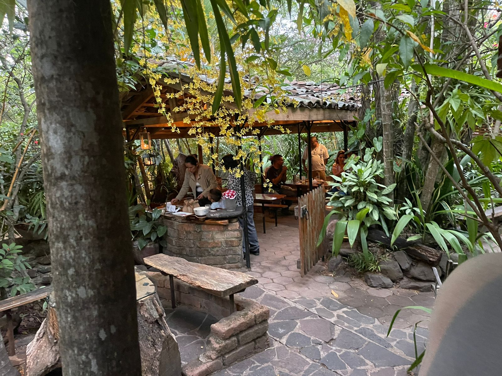
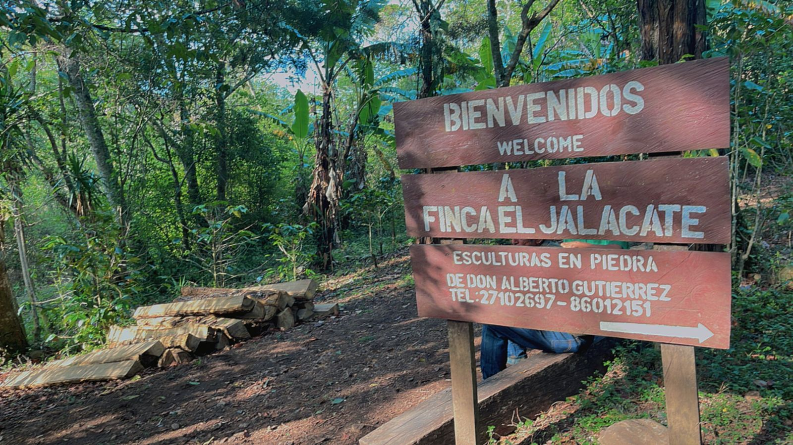
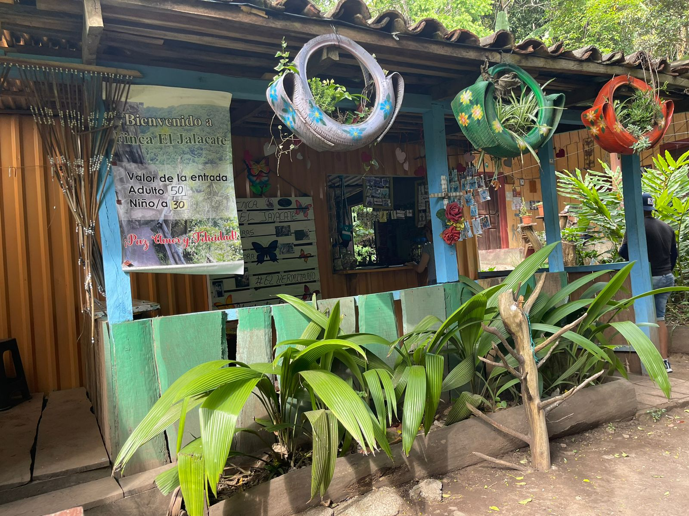
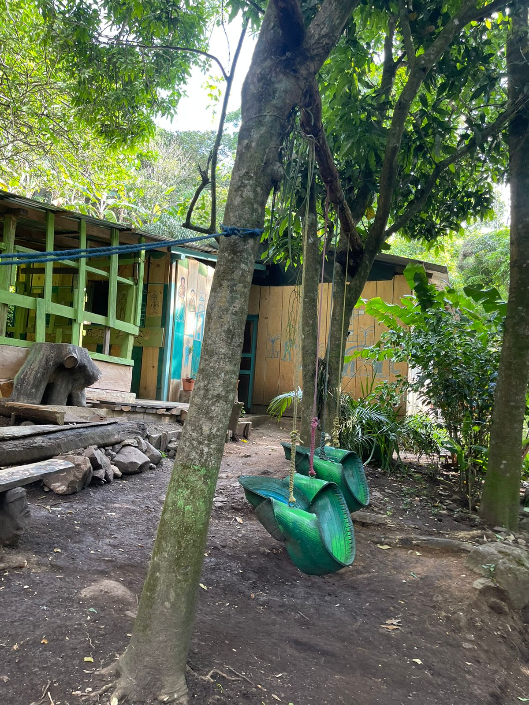
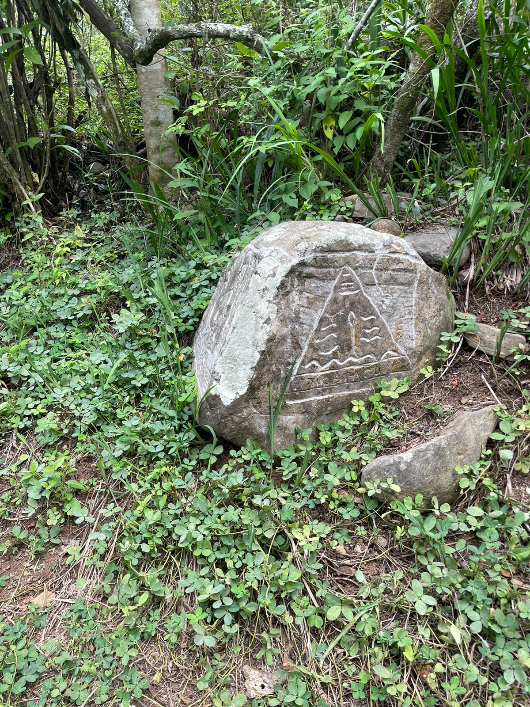
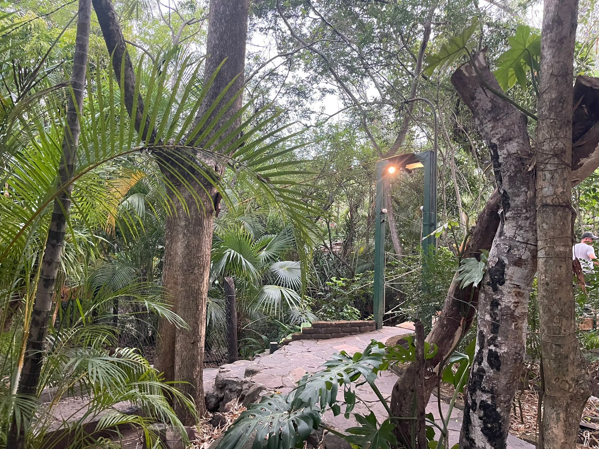
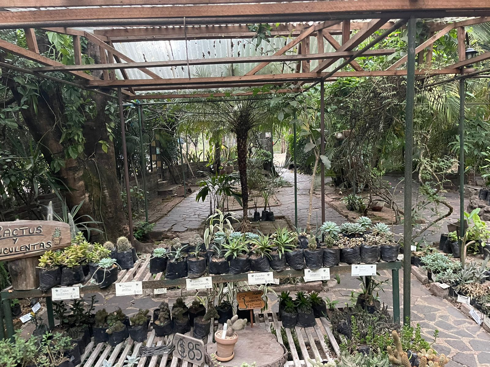
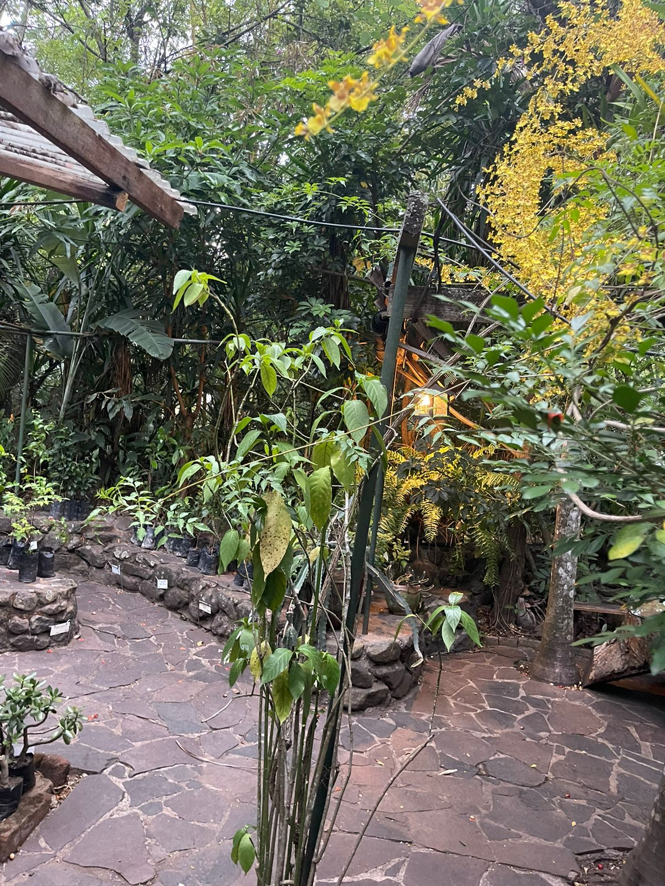
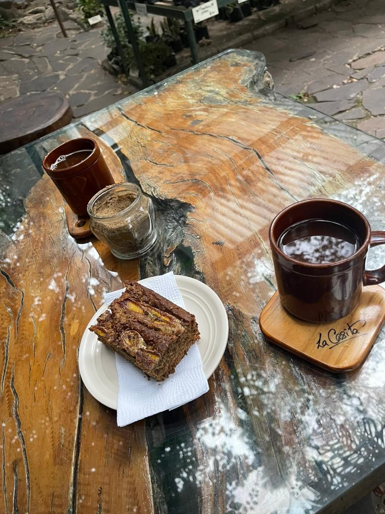

El jalacate

1¿Por que visitar el jalacate?
El jalacate es un lugar que se puede conciderar como una parte del patrimonio de nicaragua, al visitarlo estaras apoyando la cultura nicaraguense.
2¿Que ofrece el jalacate?
Ofrece una maravillosa vista desde el mirador, donde se puede ver la ciudad de esteli, tambien un clima bien fresco y frio para los amantes del frio, cubiertos de una gran variedad de fauna silvestre.
servicios


Un agradable Bienvenida


al aire libre


Total libertad/p>


Cultura


Fauna silvestre


Plantas Hornamentales


Comedor al aire libre


Comida natural